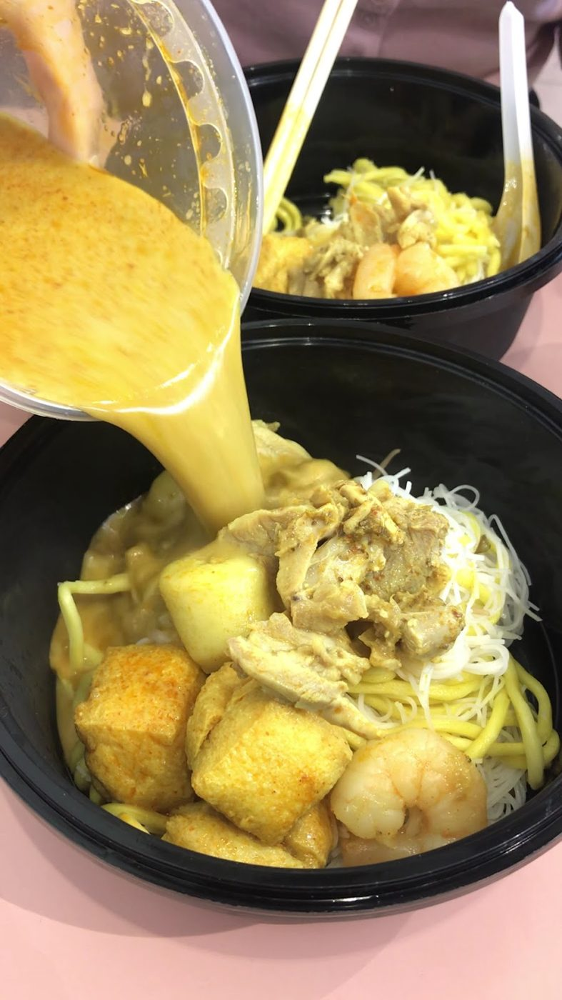
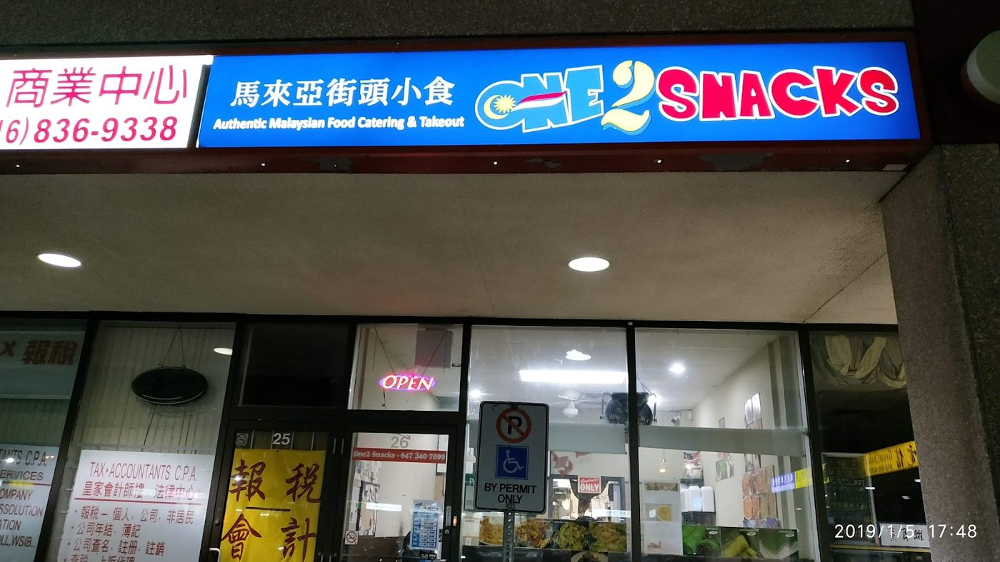

Dynasty Centre · Agincourt
Malaysian takeout at Dynasty Centre
One2Snacks is at 8 Glen Watford Dr, Unit 26, inside Dynasty Centre in Scarborough. Google lists it as a Malaysian restaurant, open Thursday to Sunday, and notes that reviewers mention it is cash only. The shop’s own sign calls it authentic Malaysian food, catering and takeout.
- Malaysian takeout
- Cash only
- Thursday to Sunday
- Dynasty Centre
How to order
Call or email ahead
A handwritten note on the counter, visible in a Google photo, lists the shop’s email (one2snacks@gmail.com) and phone, and the hours Thursday–Sunday, 11 a.m.–7 p.m. Fredathetoothfairy’s Google review says you should order in advance to reserve popular menu items and book a pickup time. Other reviewers have also been able to walk in, so the surest plan is to call or email first.
Cash only, takeout, a few stools
Google’s listing includes a “cash only” note (mentioned in 27 reviews) and a takeout attribute. Fredathetoothfairy wrote “Take out only. Cash only.” Photos and reviews describe a short counter with wooden stools rather than a full dining room.
Dishes people mention
On Google, reviewers name curry laksa (John Y writes about chicken curry laksa with fish balls, tofu and bean sprouts), char kway teow, and chili padi chicken. Preethi Elsa Thomas called the laksa the best she had had in a long time and also tried the pad thai, which she said was “alright” beside the other dishes. Those are customer descriptions, not a posted menu on this page.
Catering
The shopfront sign at unit 26 reads “Authentic Malaysian Food Catering & Takeout.” Call or email if you want to ask about a catering order.
These details come from One2Snacks’ public Google listing and reviews, the shop’s own counter note and storefront sign (visible in Google photos), all read or downloaded Nov 25, 2026. This page does not list prices. A sign at the counter also warns that products may contain or come into contact with peanuts, nuts and other food allergens.

A small counter in Dynasty Centre
The shop is unit 26 at 8 Glen Watford Dr, inside Dynasty Centre in Agincourt. Google does not list a website of the shop’s own. A note at the counter gives the email and phone, and reviewers say popular dishes can sell out, so it helps to get in touch before you come.
Some older directories still mark One2Snacks as temporarily closed. Google’s listing, checked Nov 25, 2026, shows the regular Thursday-to-Sunday hours.
What customers say
4.7 ★ from 782 Google reviews (checked Nov 25, 2026). Quotes are word for word. Each one says where it was read: on the Google listing itself, or on a public page that copies reviews.
★★★★★
Hole in the wall in a strip plaza. Take out only. Cash only. Must order in advance early to reserve popular menu items and book a pickup time. It was packed when we went to pick up our order. Great phone etiquette. Very polite and patient. Food tastes just like from Malaysia. Of course not Malaysian prices. Dishes had good “wok hay”.
★★★★★
I was just recently introduced to this hidden institution at Dynasty Centre and had been on the lookout for some good Malaysian food. Had some of the best Char Kwey Diew and Curry Laksa i've ever had. It's very much a destination visit worth making the trek to. Will be back soon!
★★★★★
The best curry laksa I have had in a long time. Food was piping hot for a take out.
The chili pedi chicken was so flavorful 10/10 recommend.
Pad Thai was alright; The other dishes overshadowed the flavor of the Pad Thai.I will definitely be going back again to try more from their menu.
★★★★★
3 words chicken curry laksa
Small place, counter seating, enough for a small family, the rest sits outside on the curb (just joking).
Choice of little spice, medium spice and burn your tongue spicy. Luckily I chose medium spicy which was just about right.
Ordered take out, got home, the hot noodles were starting to stick together, quickly separated using my chopsticks. The curry soup stock was placed in a separate round container, still very hot.
The fish balls, tofu, chicken, bean sprouts were swimming in delicious hot spicy curry broth. When combined with the noodles I could have sworn I heard angels singing.
Super delicious at a surprisingly reasonable price. Life is good.
From the counter and the takeout box
Real photos from the shop’s public Google listing, downloaded Nov 25, 2026. A wall-menu photo that shows prices is not included. Tap to enlarge.
Visit the shop
8 Glen Watford Dr #26
Scarborough, ON M1S 2C1
Inside Dynasty Centre, Agincourt
one2snacks@gmail.com
| Monday | Closed |
|---|---|
| Tuesday | Closed |
| Wednesday | Closed |
| Thursday | 11 a.m.–7 p.m. |
| Friday | 11 a.m.–7 p.m. |
| Saturday | 11 a.m.–7 p.m. |
| Sunday | 11 a.m.–7 p.m. |
Hours are from the Google listing, checked Nov 25, 2026: Thursday–Sunday 11 a.m.–7 p.m., Monday–Wednesday closed. A note on the shop’s own counter lists the same hours. Yellow Pages matches the Thursday–Sunday times and says “Verify with Merchant.” Tripadvisor lists Sunday until 7:30 p.m. and, like Mindtrip, still marks the shop “Temporarily Closed.” Google does not: on Wednesday, Nov 25, 2026 it showed “Closed · Opens 11 a.m. Thu,” and it has a review from a week ago. If you are unsure whether they are open, please call first.